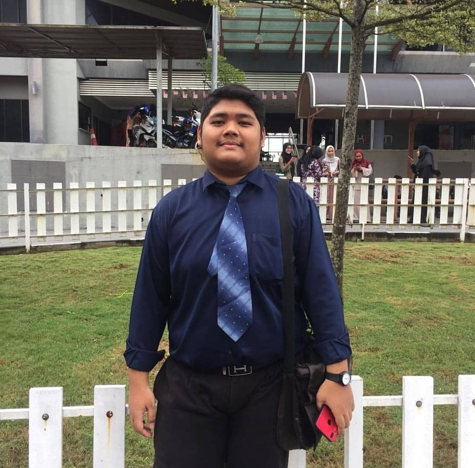
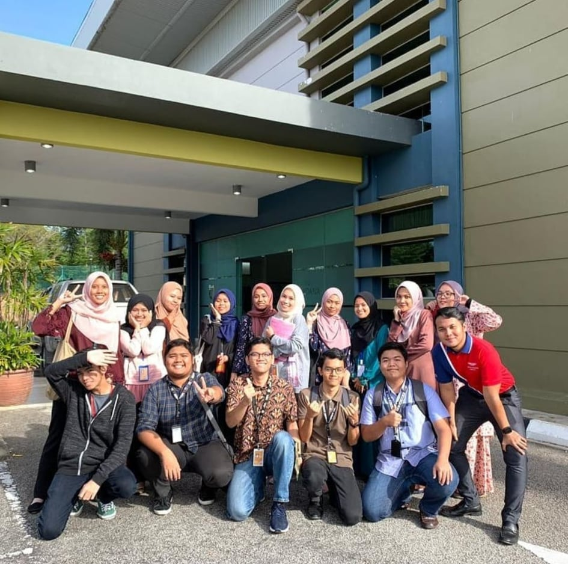

| DURING MY PRIMARY, SECONDARY,COLLEGE AND NOW IN UNIVERSITY |
Detail |
Picture of Memories |
| This was during my primary school, during at time, i went to "Sekolah Rendah Mahkota Sari" which this time i take a picture with my classmate and
thankfully, until now we are still in touch with each other. |

|
| This picture was taken when i was on Secondary school, and that time i study at "Sekolah Menengah Kebangsaan Gerik
and that time we take a picture together with my school friend when we have special program for SPM in 2017 which include all school in Gerik area. |

|
| After SPM, i went to continue studying in college (KPTM), but only had 1 semester, before I got an offer to go to university because
I believe, my sustenance to continue studying now is at the University which is (UiTM) |

|
| This picture when i was on University Technology of MARA (UiTM) until now, and we take a picture
as we finished the Semester and ready to holiday |

|